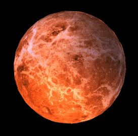
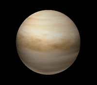
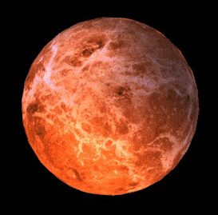
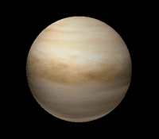

|
 |  |  |
|---|
| Planet | Mass (kg) | Diameter (km) | Mean density (kg/m^3) | Escape velocity | Average distance from Sun (km) | Rotation period (Earth time) | Revolution period (Earth time) |
|---|---|---|---|---|---|---|---|
| Earth | 5.98 x 1024 | 12756 | 5520 | 11200 | 1 AU (149,597,890 km) | 1 (23.93 hours) | 365.26 |
| Mars | 6.42 x 1023 | 6787 | 3940 | 5000 | 1.524 AU (227,936,640 km) | 1.026 | 686.98 |
| Venus | 6.42 x 1023 | 12104 | 5250 | 10400 | 0.723 AU (108,208,930 km) | 243.02 (retrograde) | 224.7 |
| Saturn | 5.69 x 1026 | 120660 | 690 | 35600 | 9.537 AU (1,426,725,400 km) | 0.44 (10.2 Earth hours) | 29.46 |
|
 |  | |
|---|